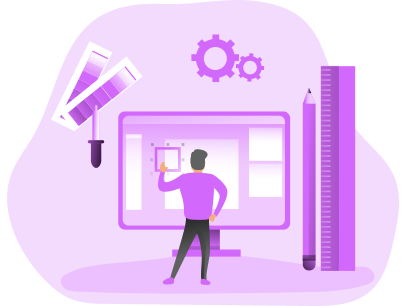

Bienvenida
1¡Hola!
Bienvenido a mi página web, mi nombre es Yenssi Pinzon , soy tecnóloga en producción multimedia enfocada al diseño y la ilustración, mi contenido se enfoca en el diseño de pizas digitales para redes sociales, edición de contenido audiovisual y contenido multimedia.
2¿Qué es un productor multimedia?
Un productor multimedia tiene el deber de transmitir una información determinada en los distintos medios gráficos, audiovisuales o de código, comunicando de manera clara y concisa para que el publico determinado logre comprender de la manera mas sencilla posible. .
Galeria


Demostracion Adobe XD

Pisy es una aplicacion movil dedicada a personas que padecen de transtornos de ansiedad en el cual se dan distintas formas y consejos para regular este transtorno.
Experta en:
Contenido Multimedia
